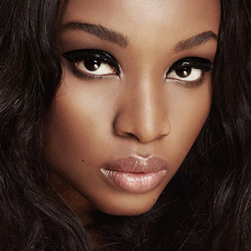

viewport设置


尼克斯队解雇禅师杰克逊之后，总裁位置空缺。最近前骑士队经理大卫-格里芬拒绝了出任尼克斯队总裁职位的可能，目前临时经理史蒂夫-米尔斯还在管理着球队事务。
尼克斯随队记者Begley说道：“这些对安东尼影响不大，米尔斯还是在处理尼克斯这些交易谈判事务，安东尼很愿意去放弃交易否决权，但是现在对火箭队和尼克斯队比较难的是，一对一搞定交易太难了，他们需要有第三方球队来帮助交易完成。为了完成交易，莱恩-安德森很可能会交易到那支第三方球队，各方面都想完成交易，现在就是达成一个交易的问题。”